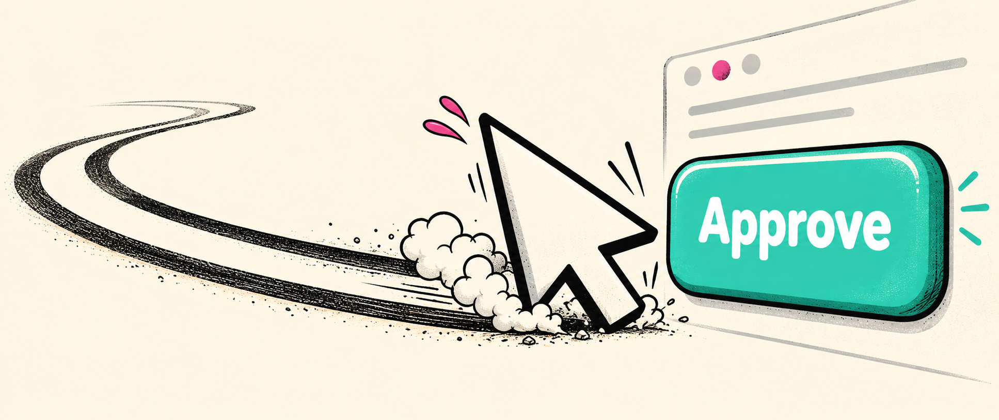

<section id="meme-approve" style="background:#000">
<h2 class="t nok">ЛИНЕЙНО? APPROVE</h2>

<p class="meme-caption">Мозг ещё читает. <span class="sort">Рука уже согласна</span></p>
<aside>Прежде чем рука закончит ревью за нас, разберём задачу. [пауза 2 с]<br>Что приходит на устройство и какой результат нам нужен?<br>[→ следующий слайд]<br><br>──────────<br>Источники и условия<br>Оригинальная иллюстрация ImageGen, V6; assets/src/img/memes_v6_early_prompts.txt. Мем №31: импульсивный approve после слов о линейной сложности. Технические условия исходного дифа остаются на diff/contract.<br></aside>
</section>
